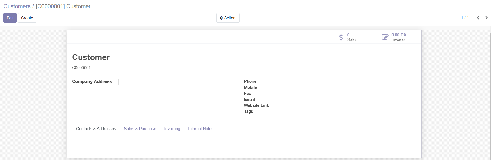
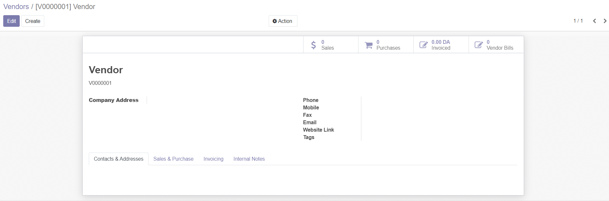

References Module
Odoo 14.0 Community
Author: SARL FOCUS SYSTEM - contact@focussystem.dz
Description
Automatically create customer and supplier references.
Client reference
When creating a customer, a reference is automatically created for him. Customer references begin with 'C' and contain 7 digits.

When creating a supplier, a reference is automatically created for him. Supplier references begin with 'S' and contain 7 digits.
